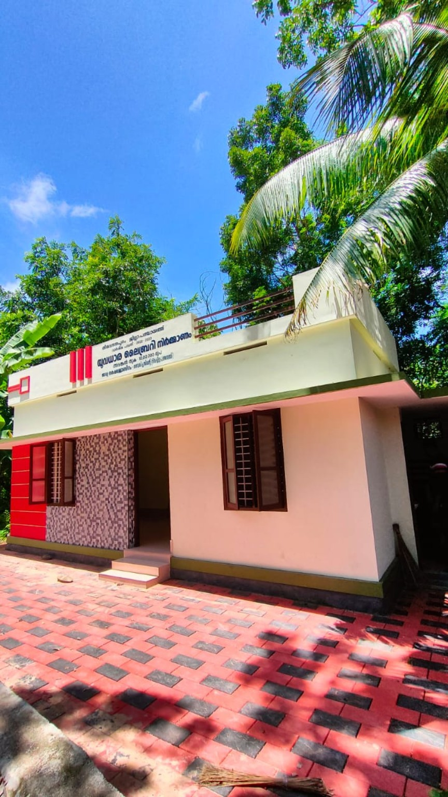
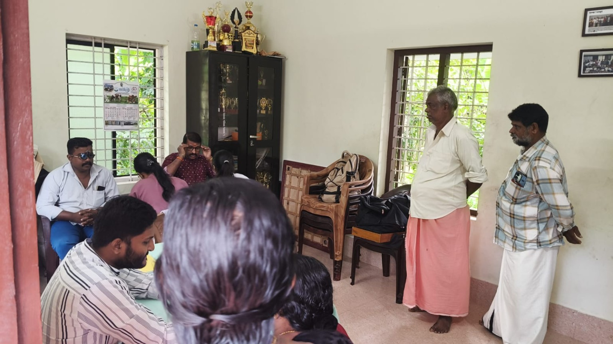
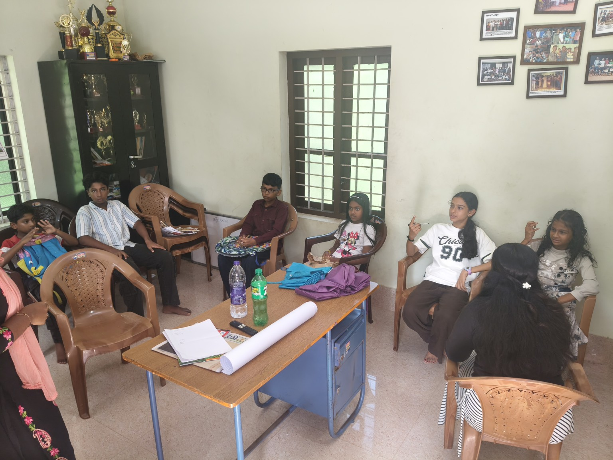
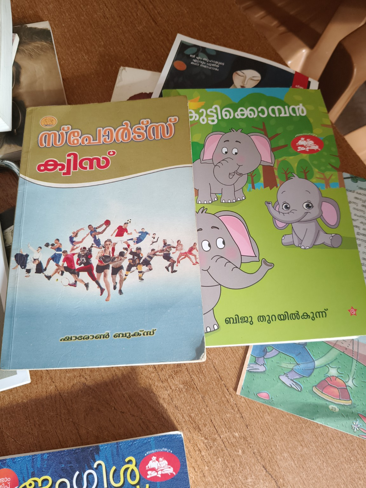
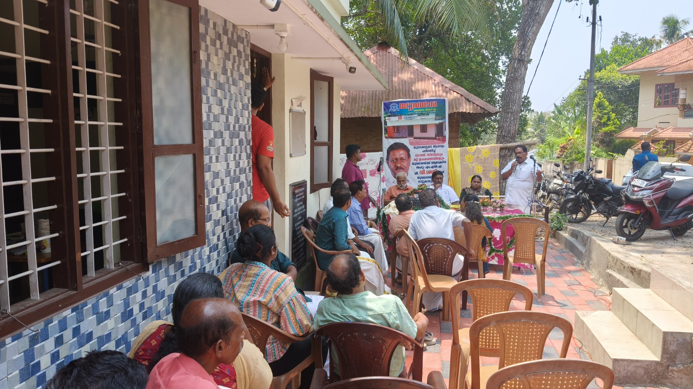
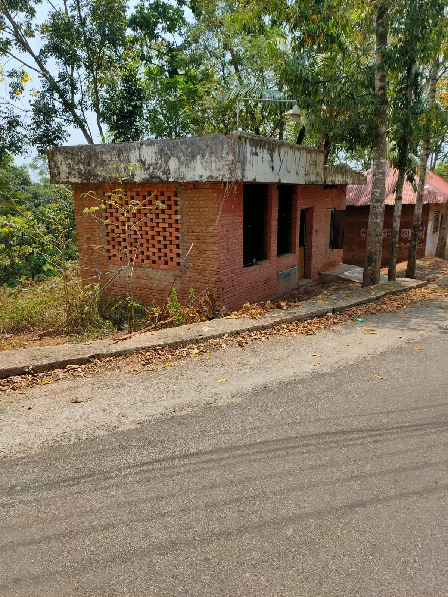

GALLERY / ഗാലറി







മേൽകടയ്ക്കാവൂർ
വായനയിലൂടെ അറിവിലേക്ക്, അറിവിലൂടെ സമൂഹത്തിലേക്ക്.
ഞങ്ങളെക്കുറിച്ച്ചിറയിൻകീഴ് ഗ്രാമപഞ്ചായത്തിലെ മൂന്നാം വാർഡായ മേൽക്കടയ്ക്കാവൂരിൽ പ്രവർത്തിക്കുന്ന ലൈബ്രറിയാണ് യുവധാര ലൈബ്രറി ആൻഡ് റീഡിംഗ് റൂം. 1984-ൽ പ്രവർത്തനം ആരംഭിച്ച ഈ ലൈബ്രറിയിൽ രണ്ടായിരത്തിലധികം പുസ്തകങ്ങളുടെ ശേഖരമുണ്ട്.
പുസ്തക വിതരണത്തിനൊപ്പം കലാ-കായിക മത്സരങ്ങൾ, കുട്ടികൾക്കായുള്ള പരിപാടികൾ, വിവിധ സാംസ്കാരിക പ്രവർത്തനങ്ങൾ തുടങ്ങിയവയും സജീവമായി സംഘടിപ്പിച്ചുവരുന്നു.
സ്മാർട്ട് ടിവി, കമ്പ്യൂട്ടർ, സി.സി.ടി.വി. ക്യാമറ, സൗണ്ട് സിസ്റ്റം തുടങ്ങിയ ആധുനിക സൗകര്യങ്ങളും ലൈബ്രറിയിൽ ഒരുക്കിയിട്ടുണ്ട്.
ചിറയിൻകീഴ് ഗ്രാമപഞ്ചായത്ത് സംഘടിപ്പിക്കുന്ന കേരളോത്സവത്തിലെ കലാ വിഭാഗത്തിലും യുവധാര സജീവ സാന്നിധ്യമാണ്. തുടർച്ചയായി മികച്ച നേട്ടങ്ങൾ കൈവരിച്ചുകൊണ്ട് യുവധാരയുടെ കലാപ്രവർത്തനങ്ങൾ ശ്രദ്ധേയമായി തുടരുന്നു.
വായനക്കാർക്ക് പുസ്തകങ്ങൾ ലഭ്യമാക്കുന്നു.
കലാ പ്രവർത്തനങ്ങൾക്കും മത്സരങ്ങൾക്കും വേദി.
കായിക പ്രവർത്തനങ്ങളെ പ്രോത്സാഹിപ്പിക്കുന്നു.
മുതിർന്നവർക്കുള്ള കൂട്ടായ്മ.
കുട്ടികൾക്കായി വായനയും വിവിധ പരിപാടികളും.
അംഗത്വ വിവരങ്ങൾക്ക് ലൈബ്രറിയുമായി ബന്ധപ്പെടുക.





